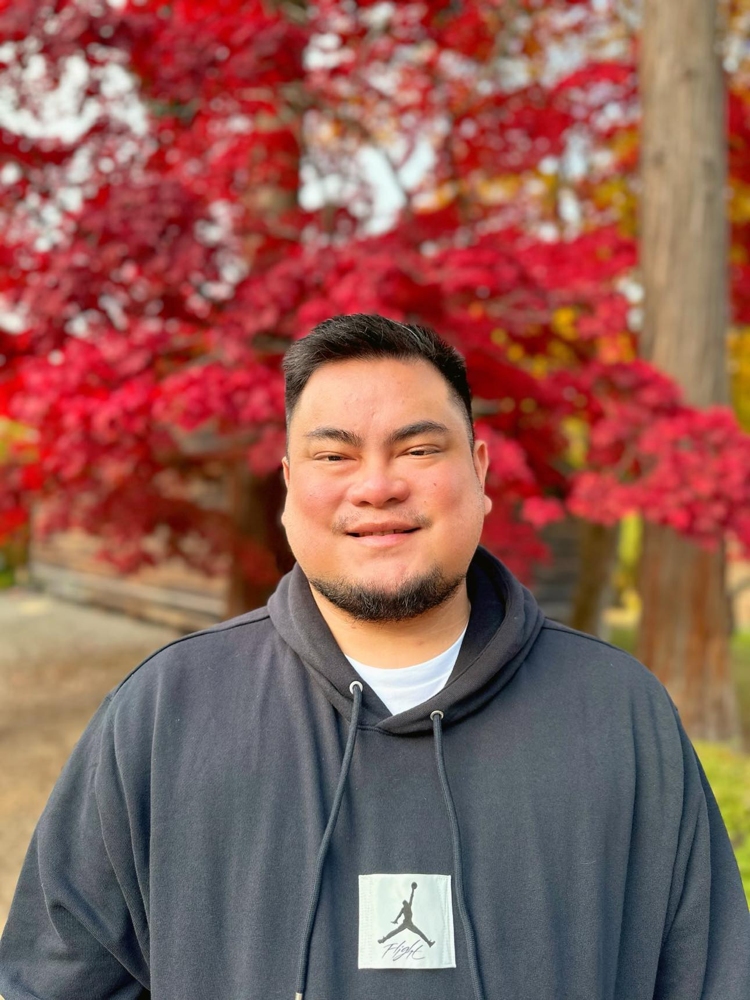

A versatile professional with extensive experience in executive support, customer service, and digital marketing, I am now transitioning into web development. Equipped with a BA in Communication Arts and a Digital Marketing certification, I bring a unique blend of strategic thinking and technical expertise. I am eager to leverage my skills to create dynamic, user-friendly websites for clients, enhancing their digital presence and driving business success.
Currently studying Web Development to expand my technical skill set and offer comprehensive digital solutions, including website creation and maintenance, to clients. Eager to apply my knowledge in HTML, CSS, and JavaScript to build visually appealing and highly functional websites. My work ethic and experience in managing complex tasks, such as running successful digital marketing campaigns and optimizing online storefronts, demonstrate my capability to learn and excel in web development. The skills I have honed in project management, problem-solving, and strategic planning as an executive assistant and media buyer translate directly to building effective, client-focused web solutions.
Email: ryanicasas@gmail.com
Phone number: +639171597926
Location: Cagayan De Oro City, Philippines 9000